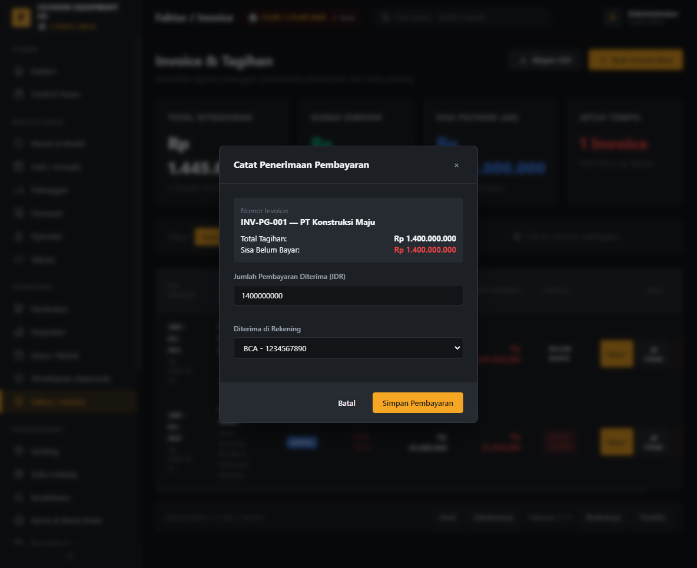
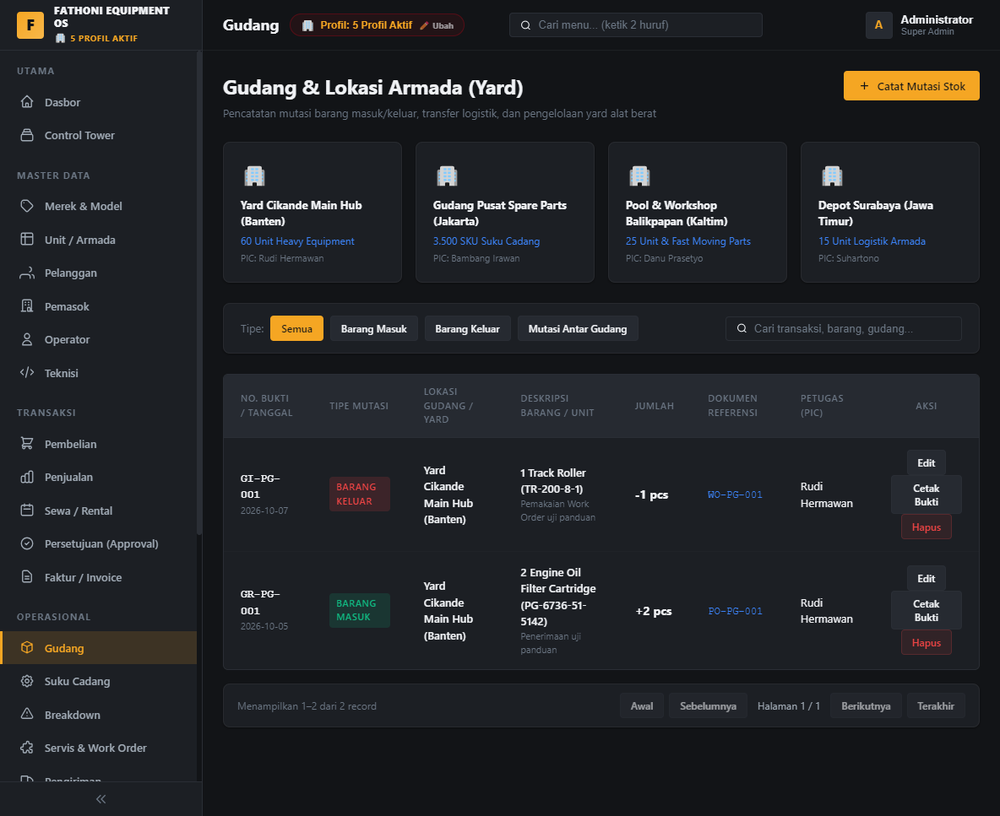

| Kelompok sidebar | Operasional |
| Alamat | #/warehouse (klik menu Gudang di sidebar) |
| Peran yang melihat | Super Admin, Gudang, Teknisi |
| Mode bisnis | menu ini tampil bila salah satu profil bisnis aktif: Dealer / Distributor, Kontraktor, Bengkel / Workshop |
| Layar dipotret | 1 |
| Form dipotret | Catat Mutasi Masuk / Keluar Gudang |
Buku mutasi barang masuk/keluar beserta lokasi yard, dan kartu ringkasan per yard. Setiap baris punya bukti cetak.

Judul di layar: Gudang & Lokasi Armada (Yard)
Subjudul: Pencatatan mutasi barang masuk/keluar, transfer logistik, dan pengelolaan yard alat berat
Kolom tabel (1 baris terlihat pada potret):
| No. | Nama kolom persis di layar |
|---|---|
| 1 | NO. BUKTI / TANGGAL |
| 2 | TIPE MUTASI |
| 3 | LOKASI GUDANG / YARD |
| 4 | DESKRIPSI BARANG / UNIT |
| 5 | JUMLAH |
| 6 | DOKUMEN REFERENSI |
| 7 | PETUGAS (PIC) |
| 8 | AKSI |
Kolom yang ada di luar form (pencarian/pendaftar):
Urutan kolom, nama label, tanda wajib, dan isi bawaan di bawah ini dibaca dari layar yang dipotret, bukan dari kode sumber. Tanda * adalah kolom yang memang ditahan kosong oleh aplikasi.
Dibuka dengan menekan tombol Catat Mutasi Stok.

Lebar jendela 540 px. Seluruh kolom muat tanpa menggulir pada jendela tinggi 980 px; pada jendela yang lebih pendek bagian bawah tetap perlu digulir.
| Label di layar | Jenis kolom | Isi saat jendela baru dibuka | Pilihan dropdown / teks bantu |
|---|---|---|---|
| No. Bukti Mutasi * | teks | TRX-2026-002 | - |
| Jenis Mutasi | dropdown (3 pilihan) | INBOUND | Barang Masuk (Inbound / Penerimaan); Barang Keluar (Outbound / Pemakaian); Transfer Antar Yard / Gudang |
| Lokasi Gudang / Yard | dropdown (4 pilihan) | Yard Cikande Main Hub (Banten) | Yard Cikande Main Hub (Banten); Gudang Pusat Spare Parts (Jakarta); Pool & Workshop Balikpapan (Kaltim); Depot Surabaya (Jawa Timur) |
| Nama Barang / Unit Alat Berat * | teks | Contoh: 1 Unit Excavator SANY SY215C | - |
| Kuantitas / Jumlah * | angka | 1 | - |
| Satuan | teks | Unit | - |
| No. Dokumen Referensi (PO/WO/SPK) | teks | PO-2026-001 | - |
| Nama Petugas (PIC) | teks | Rudi Hermawan | - |
| Keterangan Tambahan | teks | Catatan kondisi fisik saat serah terima... | - |
Wajib diisi: No. Bukti Mutasi, Nama Barang / Unit Alat Berat, Kuantitas / Jumlah
Tombol di kaki jendela: Batal · Simpan Mutasi